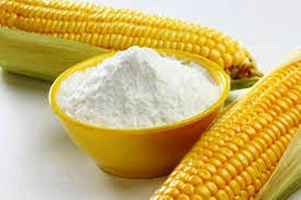
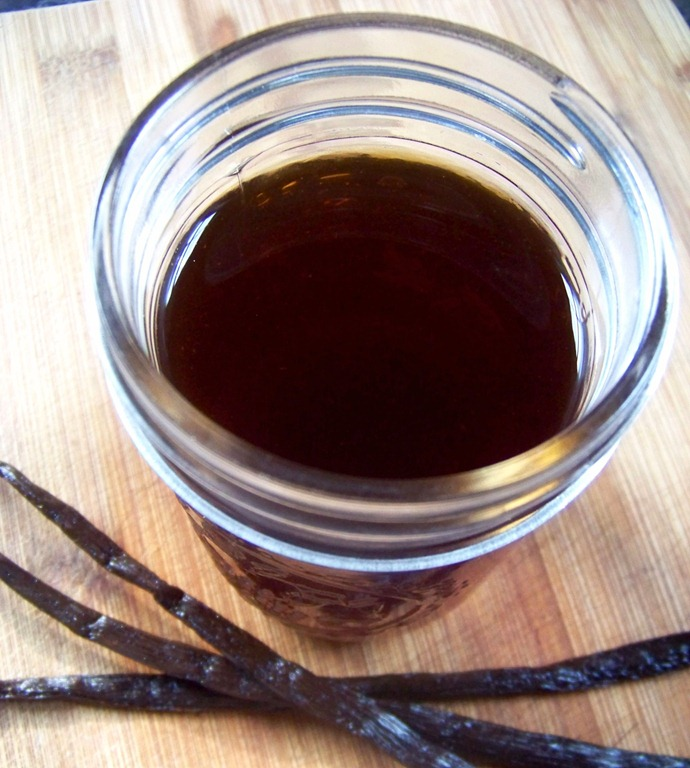
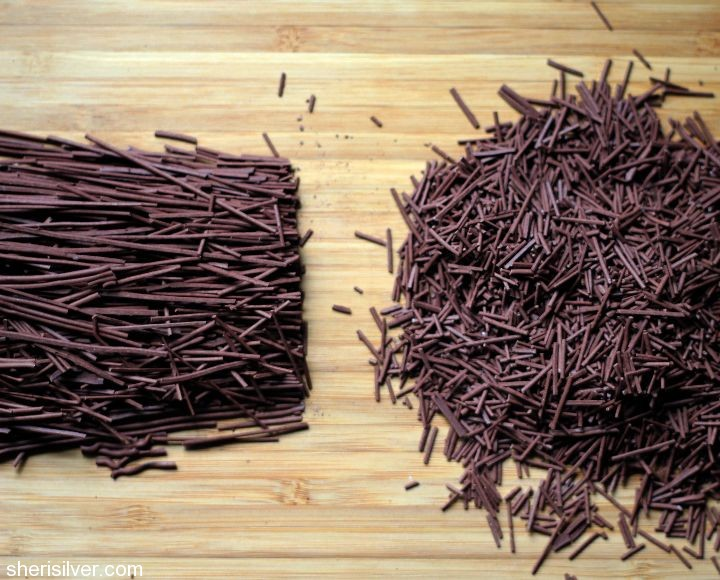
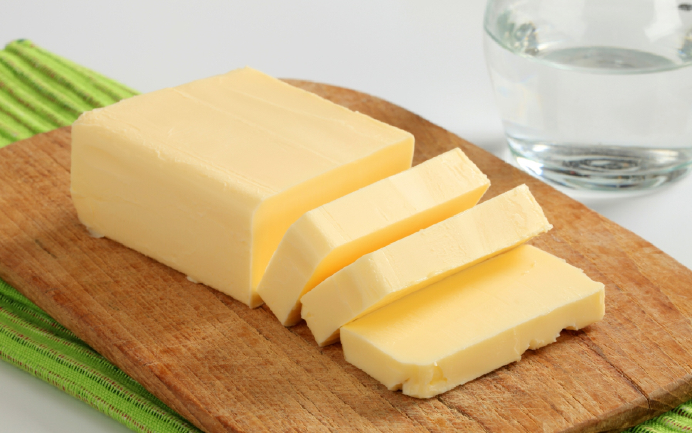

Milk

Corn Flour

Sugar

Vanilla Essence

Chocolate Sprinkles

Everyone likes to eat desert after their meal.There are various type of deserts which we can have however, we are here with a recipe of butterscotch pudding which is very delicious and easy to make at home. This recipe is also very cheap as everyone can find the ingredients very easily at home and enjoy with it. So,let's begin with the recipe.
You can also add your choice of fruits or dry fruits for garnishing. So, this lusicious pudding recipe is ready to serve and you can relish with your family.Have fun!!